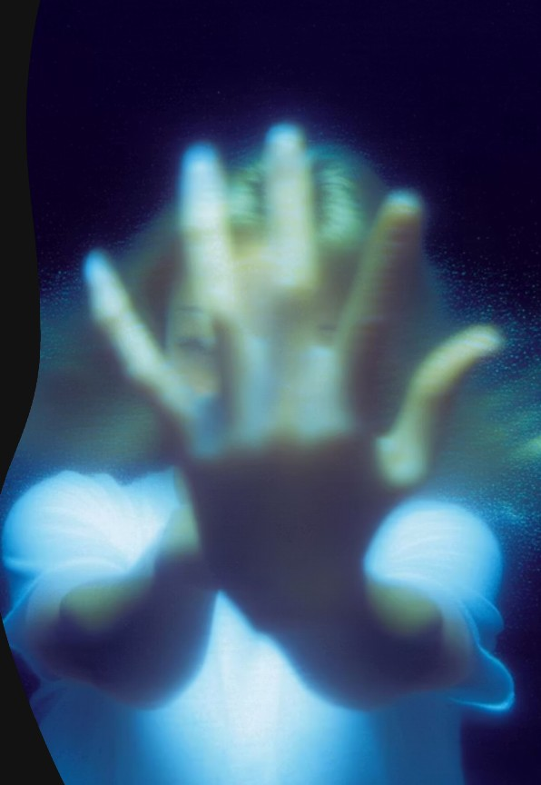
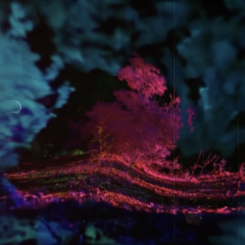
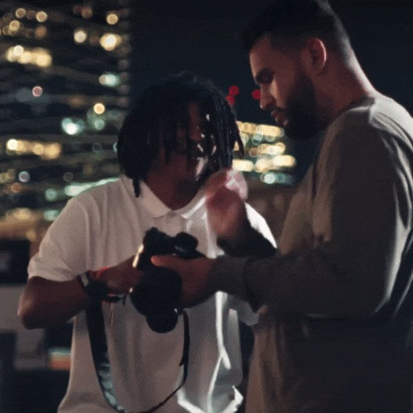

Work / In Public
Ideas tested where people can feel them.
Selected exhibitions, installations and films built by Protopica and its collaborators.
- 0
- Exhibition audience
- New York / Barcelona / Vancouver
- 0
- Talks + workshops
- Keynotes to classrooms
- 0
- Hardware donated
- Access made tangible
- 0
- Film audience
- Online + in theatres


Research
Research should not live behind closed doors.
We share what we are learning so more people can understand, question and shape the technologies changing creative practice.
Research Notes
Notes will appear here soon.
Published research, experiments and process notes will show up here once they are live.
Collaborate / Three Ways In
Think clearly. Make boldly. Share what works.
Three ways we help ideas move from uncertainty into the world.



Education / Classrooms + Stages
Complex ideas, made useful.
Lectures, workshops and public conversations grounded in creative practice.
University Lectures + Workshops
From studio critique to lecture hall.
AI, XR, worldbuilding and cultural preservation taught through work we have actually made.

New York / Nov 2025
Columbia University
Ivy LeagueDisrupt the narrative: Conversations that shape community.
View lecture


Toronto / Feb 2024
OCAD University
Challenging mainstream narratives through worldbuilding.
View lecture

Beyond Campus
Selected public stages.
About
Built by people who refused to choose between art and engineering.


Contact
Tell us what you are trying to move forward.
You do not need a finished brief. Begin with what you know.